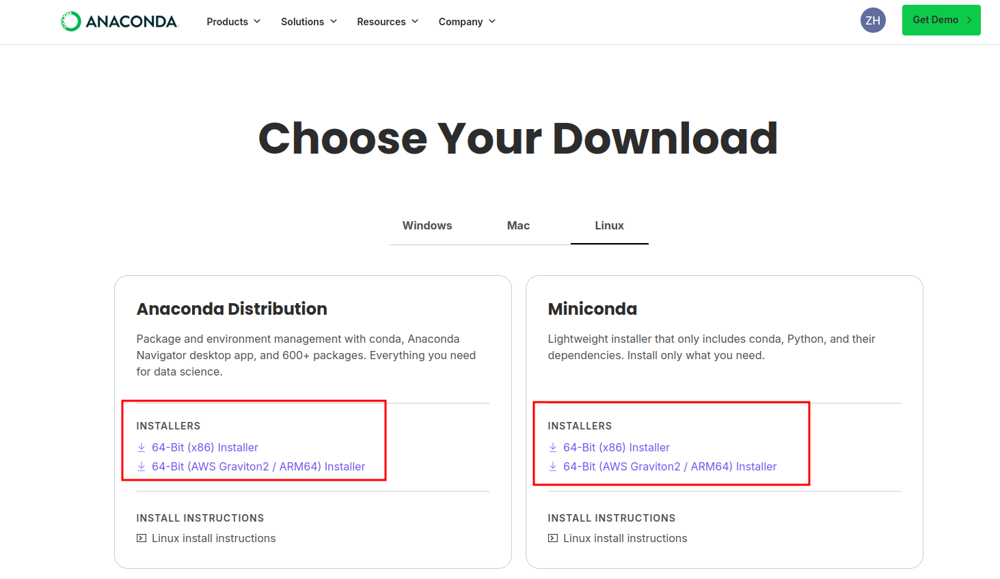
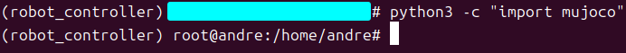

1.2 Системные требования¶
Назначение¶
Этот раздел описывает программное и аппаратное окружение, необходимое для запуска симуляции MuJoCo, аппаратного контроллера, SDK и внешних алгоритмов.
Рекомендуемое окружение¶
| Сценарий | Рекомендуемая система | Архитектура | Примечания |
|---|---|---|---|
| Локальная симуляция и разработка | Ubuntu 20.04 или новее | x86_64 | Используется для проверки MuJoCo, SDK и внешних алгоритмов |
| Аппаратная сторона E15 / RK3588 | Ubuntu 20.04 | aarch64 / arm64 | Использует bin_rk3588/ и lib_rk3588/ |
| Аппаратная сторона Y15 / x86 | Ubuntu 16.04 | x86_64 | Использует bin/ и lib/ |
Программные зависимости¶
| Зависимость | Назначение | Рекомендуемая установка |
|---|---|---|
| Conda / Python 3.8 | Симуляция, инструменты LCM, внешние алгоритмы | bash scripts/setup_conda_env.sh |
| LCM | Связь контроллера, SDK, симуляции и внешних алгоритмов | sudo apt-get install liblcm-dev или вспомогательный скрипт |
| MuJoCo | Физическая симуляция и визуализация | pip install mujoco==3.2.3 |
| ONNX Runtime | Запуск RL-моделей политик | pip install onnxruntime |
| CMake / Make / GCC | Сборка контроллера и SDK | bash scripts/check_cmake_make_gcc.sh или системный пакетный менеджер |
Первичная настройка¶
Перед запуском скриптов настройки установите Anaconda или Miniconda: https://www.anaconda.com/products/distribution



После установки создайте и активируйте Conda-окружение robot_controller для симуляции и инструментов:
bash scripts/setup_conda_env.sh
conda activate robot_controller
Если Python-привязки LCM отсутствуют, например import lcm завершается ошибкой, установите их:
bash scripts/install_python_lcm.sh
Если связь между несколькими машинами не работает или локальные сообщения LCM не принимаются, настраивайте multicast/сеть LCM только при необходимости:
sudo bash scripts/setup_lcm_network.sh
Критерии успешного выполнения¶
- В Conda-окружении
robot_controllerкомандаpython3 -c "import mujoco"завершается без ошибки.

- В том же окружении команда
python3 -c "import lcm"завершается без ошибки.

bash scripts/monitor_lcm.sh --no-guiзапускается.

- Примеры C++ SDK собираются в
yobotics_sdk/build/.
Примечание по безопасности¶
Работа физического робота зависит не только от программного окружения. Перед запуском также сверьте аккумулятор, аварийную остановку, IMU, SPI-устройства, сетевой интерфейс, multicast-маршрут и конфигурационный файл с фактическим оборудованием площадки.